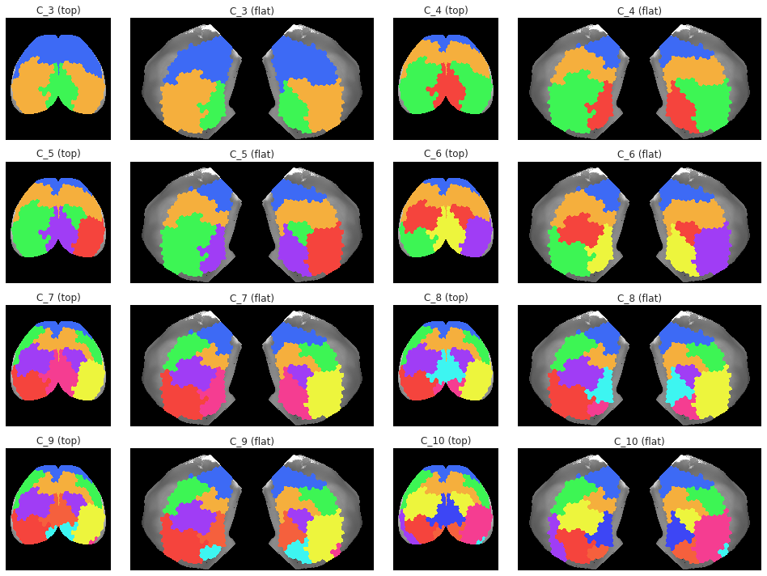
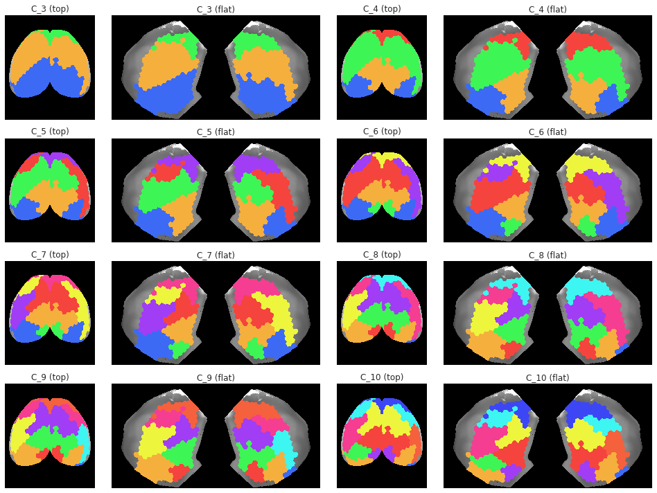

# HIDE CODE
import os
import sys
import nibabel as nib
import networkx as nx
from time import time
from pprint import pprint
from copy import deepcopy as dc
from os.path import join as pjoin
from myterial import orange, blue_grey
from IPython.display import display, IFrame, HTML
from matplotlib.colors import rgb2hex, to_rgb
import matplotlib.pyplot as plt
import seaborn as sns
# set style & no interpolalation
import matplotlib
matplotlib.rcParams['image.interpolation'] = 'none'
sns.set_style('whitegrid')
%matplotlib inline
# tmp & extras dir
git_dir = pjoin(os.environ['HOME'], 'Dropbox/git')
tmp_dir = pjoin(git_dir, 'jb-Ca-fMRI/tmp')
extras_dir = pjoin(git_dir, 'jb-Ca-fMRI/_extras')
lfr_dir = pjoin(os.environ['HOME'], 'Documents/workspaces/lfr/binary_overlapping')
# GitHub
sys.path.insert(0, pjoin(git_dir, '_Ca-fMRI'))
from register.atlas import make_tree_graph
from register.parcellation import Parcellation
from analysis.hierarchical import Hierarchical
from analysis.bootstrap import *
from analysis.svinet import *
from analysis.group import *
from analysis.lfr import *
from utils.render import *
from utils.plotting import *
from model.mouse import Mice
from model.configuration import Config
# warnings
import warnings
warnings.filterwarnings('ignore', category=DeprecationWarning)
%%time
mice = Mice((256, 4))
CPU times: user 168 ms, sys: 1.3 s, total: 1.47 s
Wall time: 1.47 s
Hier Ca¶
%%time
hier = Hierarchical(
mice=mice, key='sub-SLC', mode='ca2', task='rest',
).fit_hierarchical(range(3, 11))
CPU times: user 10.4 s, sys: 12.7 s, total: 23.1 s
Wall time: 4min 55s
pi_disjoint = np.zeros((len(hier.results), len(hier.n2l)), dtype='uint32')
for i, (n_clust, result_d) in enumerate(hier.results.items()):
for oc_idx, clist in result_d['cluster_assigns'].items():
for lbl in clist:
node = hier.l2n[lbl]
pi_disjoint[i, node] = oc_idx
proj = hier.project_vec(pi_disjoint)
import ants
topview = 'topview_10um.nii.gz'
topview = pjoin(mice.cfg.base_dir, topview)
topview = ants.image_read(topview, pixeltype='unsigned int')
topview = topview.numpy()
flatmap = 'flatmap_10um.nii.gz'
flatmap = pjoin(mice.cfg.base_dir, flatmap)
flatmap = ants.image_read(flatmap, pixeltype='unsigned int')
flatmap = flatmap.numpy()
ncols = 4
nrows = int(np.ceil(len(hier.results) / (ncols / 2)))
fig, axes = create_figure(nrows, ncols, (13.5, 2.5 * nrows), gridspec_kw={'width_ratios': [1, 2, 1, 2]})
min_thres = 0.1
for i, n_clust in enumerate(hier.results):
cmap = get_cluster_cmap(range(n_clust))
data_top = proj['parcel2d-top'][i]
data_flat = proj['parcel2d-flat'][i]
data2plt = np.ma.masked_where(data_top < min_thres, data_top)
ax = axes.ravel()[i * 2]
ax.imshow(topview, cmap='Greys_r')
ax.imshow(data2plt, cmap=cmap)
ax.set_title(f"C_{n_clust} (top)")
data2plt = np.ma.masked_where(data_flat < min_thres, data_flat)
ax = axes.ravel()[i * 2 + 1]
ax.imshow(flatmap, cmap='Greys_r')
ax.imshow(data2plt, cmap=cmap)
ax.set_title(f"C_{n_clust} (flat)")
trim_axs(axes, 2 * len(hier.results))
remove_ticks(axes)
plt.show()

props = {'mice': mice, 'mode': 'ca2', 'task': 'led'}
%%time
hier = Hierarchical(
key='sub-SLC', **props,
).fit_hierarchical(range(3, 11))
CPU times: user 10.2 s, sys: 15.6 s, total: 25.8 s
Wall time: 3min 28s
pi_disjoint = np.zeros((len(hier.results), len(hier.n2l)), dtype='uint32')
for i, (n_clust, result_d) in enumerate(hier.results.items()):
for oc_idx, clist in result_d['cluster_assigns'].items():
for lbl in clist:
node = hier.l2n[lbl]
pi_disjoint[i, node] = oc_idx
proj = hier.project_vec(pi_disjoint)
ncols = 4
nrows = int(np.ceil(len(hier.results) / (ncols / 2)))
fig, axes = create_figure(nrows, ncols, (13.5, 2.5 * nrows), gridspec_kw={'width_ratios': [1, 2, 1, 2]})
min_thres = 0.1
for i, n_clust in enumerate(hier.results):
cmap = get_cluster_cmap(range(n_clust))
data_top = proj['parcel2d-top'][i]
data_flat = proj['parcel2d-flat'][i]
data2plt = np.ma.masked_where(data_top < min_thres, data_top)
ax = axes.ravel()[i * 2]
ax.imshow(topview, cmap='Greys_r')
ax.imshow(data2plt, cmap=cmap)
ax.set_title(f"C_{n_clust} (top)")
data2plt = np.ma.masked_where(data_flat < min_thres, data_flat)
ax = axes.ravel()[i * 2 + 1]
ax.imshow(flatmap, cmap='Greys_r')
ax.imshow(data2plt, cmap=cmap)
ax.set_title(f"C_{n_clust} (flat)")
trim_axs(axes, 2 * len(hier.results))
remove_ticks(axes)
plt.show()

import ants
topview = 'topview_10um.nii.gz'
topview = pjoin(mice.cfg.base_dir, topview)
topview = ants.image_read(topview, pixeltype='unsigned int')
topview = topview.numpy()
flatmap = 'flatmap_10um.nii.gz'
flatmap = pjoin(mice.cfg.base_dir, flatmap)
flatmap = ants.image_read(flatmap, pixeltype='unsigned int')
flatmap = flatmap.numpy()
def project_vec(
self,
vec: np.ndarray,
min_thres: float = 0.01, ):
if self.mode == 'ca2':
items = [
'parcel2d-top',
'parcel2d-flat',
]
else:
items = ['parcel3d']
shapes = {
name: self.mice.parcel[f"shape_{name}"]
for name in items
}
proj = {
name: np.zeros((len(vec), *sh), dtype=float)
for name, sh in shapes.items()
}
for i, data in enumerate(vec):
for node, lbl in self.n2l.items():
if data[node] < min_thres:
continue
ii = self.mice.parcel.encode(lbl)
for name, arr in proj.items():
reg_k = f"region-idxs_{name}"
nonzero_k = f"nonzero-idxs_{name}"
if ii in self.mice.parcel[reg_k]:
ids = self.mice.parcel[reg_k][ii]
ids = self.mice.parcel[nonzero_k][ids]
arr[i].flat[ids] = data[node]
return proj
proj = project_vec(pi_disjoint, hier.n2l)
Hier BOLD¶
%%time
net_ca = Network(
mice=mice,
key='sub-SLC',
df=mice.ca_dfs['sub-SLC'],
percentiles=np.linspace(50, 1, 50),
).fit_network(save=False)
%%time
net_bold = Network(
mice=mice,
key='sub-SLC',
df=mice.bold_dfs['sub-SLC'],
percentiles=np.linspace(50, 1, 50),
).fit_network(save=False)
sns.histplot(net_ca.adj[net_ca.adj.nonzero()], color='C0', alpha=0.5, stat='density')
plt.axvline(net_ca.thresholds[10], color='g', ls='--')
plt.axvline(net_ca.thresholds[5], color='r', ls='--')
sns.histplot(net_bold.adj[net_bold.adj.nonzero()], color='C1', alpha=0.5, stat='density')
plt.axvline(net_bold.thresholds[10], color='g', ls=':')
plt.axvline(net_bold.thresholds[5], color='r', ls=':')
plt.show()
x = mice.ca_dfs['sub-SLC'].values
x.shape
nans = np.where(np.isnan(x).sum(0) > 0)[0]
x = np.delete(x, nans, axis=1)
x.shape
from sklearn.decomposition import PCA
pca = PCA(
n_components=100,
svd_solver='full',
).fit(x)
plt.plot(pca.explained_variance_ratio_)
pca.components_.shape
y = pca.transform(x)
y.shape
plt.plot(y[:, 0])
np.where(y[:, 0] > 100)[0]
i = 21999
plt.imshow(x[i-150:i+150].T)
i = 21999
plt.imshow(x[i-10:i+10].T, aspect=0.2)
plt.colorbar()
plt.plot(np.abs(x).mean(-1))
z = y.copy()
z[:, 0] = 0
x_inv = pca.inverse_transform(z)
x_inv.shape
df_new = pd.DataFrame(x_inv)
df_new.shape
a, p = get_adj_mat(df_new, 'pearson')
plt.imshow(a)
plt.colorbar()
plt.imshow(net_ca.adj)
plt.colorbar()
sns.histplot(net_ca.adj[net_ca.adj.nonzero()], color='C0', alpha=0.5, stat='density')
plt.axvline(net_ca.thresholds[10], color='g', ls='--')
plt.axvline(net_ca.thresholds[5], color='r', ls='--')
sns.histplot(a[a.nonzero()], color='C5', alpha=0.5, stat='density')
plt.axvline(net_ca.thresholds[10], color='g', ls='--')
plt.axvline(net_ca.thresholds[5], color='r', ls='--')
plt.imshow(a)
plt.colorbar()
th = np.quantile(a.ravel(), q=0.8)
a_gsr = a.copy()
a_gsr[a > th] = 1.0
a_gsr[a <= th] = 0.0
th = np.quantile(net_ca.adj.ravel(), q=0.8)
a_full = net_ca.adj.copy()
a_full[net_ca.adj > th] = 1.0
a_full[net_ca.adj <= th] = 0.0
plt.imshow(a_gsr)
plt.imshow(a_full)
a_full2 = np.delete(np.delete(a_full, nans, axis=0), nans, axis=1)
plt.imshow(a_full2)
df = mice.ca_dfs['sub-SLC'].copy()
df[df.isnull()] = 0
df
hier = Hierarchical(mice, 'sub-SLC', df)
hier.fit(5)
_ = hier.fit(7)
hier.results[7]['cluster_assigns']
"""cluster_assigns = hier.results[5]['cluster_assigns']
cluster_assigns = {
c_idx: [
mice.parcel.encode(*tuple(map(
lambda string: int(string),
net_ca.n2l[e].split('-'))))
for e in c_list]
for c_idx, c_list in cluster_assigns.items()
}
cluster_assigns"""
_ = hier.fit(7)
results = get_pdist(, 'correlation')
list(results)
results['y']
x = mice.ca_dfs['sub-SLC01_ses-1_run-1'].values
x = np.ma.masked_where(~np.isfinite(x), x)
x.shape
y = sp_dist.pdist(x.T, metric='correlation')
y, len(y)
from nancorrmp.nancorrmp import NaNCorrMp
mice.ca_dfs['sub-SLC01_ses-1_run-1'].reset_index(drop=True).to_dict().items()
a = NaNCorrMp.calculate,(x)
a.shape
plt.imshow(a)
from analysis.hierarchical import sp_hier
yy = results['y'].copy()
yy = np.ma.masked_where(~np.isfinite(yy), yy)
sp_hier.linkage(yy)
y = results['y'].copy()
np.isfinite(y)
sp_hier.linkage(np.random.randn(10))
net.thresholds
plt.imshow(net.adjacencies[31], cmap=net.style['cmap'])
plt.colorbar()
list(net.adjacencies)
x = net.adjacencies[10].copy()
x[x.nonzero()] = 1
plt.imshow(x, cmap=net.style['cmap'])
plt.show()
plt.imshow(net.adjacencies[10], cmap=net.style['cmap'])
plt.show()
plt.imshow(net.adjacencies[10], cmap=net.style['cmap'])
plt.show()
list(net.l2n)[:15]
plt.imshow(net.adjacencies[10][:15][:, :15], cmap=net.style['cmap'])
plt.show()
net.set_percentiles(np.linspace(39, 1, 39), fit=False)
net._apply_thresholds()
net.thresholds
sns.histplot(net.adj[net.adj.nonzero()], color='C0')
plt.axvline(net.thresholds[10], color='g', ls='--')
plt.axvline(net.thresholds[5], color='r', ls='--')
x = net.adjacencies[25].copy()
x[x.nonzero()] = 1
plt.imshow(x, cmap=net.style['cmap'])
plt.show()
df_stim = mice.load_stim_times('ca2')
df_stim
_df = df_stim.loc[df_stim['stim'] == 1]
_df = _df[_df['task'].values == 'rest']
_df
_df['key'].unique()
df_stim = mice.load_stim_times('bold')
df_stim
save_obj(dfs, 'test_ca', tmp_dir, 'npy')
list(dfs)
dfs['sub-SLC08_ses-2_run-6']
x = dfs['sub-SLC08_ses-2_run-6'].corr()
x = x.values
np.fill_diagonal(x, 0.)
plt.imshow(x)
x.shape
a, p = get_adj_mat(dfs['sub-SLC08_ses-2_run-6'], 'pearson')
aa, pp = get_adj_mat(dfs['sub-SLC08_ses-2_run-6'], 'spearman')
idxs_pears = np.where(np.abs(a).sum(0) == 0)[0]
idxs_spear = np.where(np.abs(aa).sum(0) == 0)[0]
a.shape, aa.shape
fig, axes = create_figure(1, 2, (12, 4.5))
vminmax = np.max(np.abs(a))
im = axes[0].imshow(a, cmap='bwr', vmin=-vminmax, vmax=vminmax)
plt.colorbar(im, ax=axes[0])
vminmax = np.max(np.abs(aa))
im = axes[1].imshow(aa, cmap='bwr', vmin=-vminmax, vmax=vminmax)
plt.colorbar(im, ax=axes[1])
sns.histplot(a[a.nonzero()], color='C0', alpha=0.5)
sns.histplot(aa[aa.nonzero()], color='C1', alpha=0.5)
node_labels = dfs['sub-SLC08_ses-2_run-6'].columns.values
node_labels
n2l = {i: lbl for i, lbl in enumerate(node_labels)}
l2n = {lbl: i for i, lbl in n2l.items()}
n2l
dfs = mice.make_dfs('ca2')
y = dfs['sub-SLC08_ses-2_run-6'].corr()
y = y.values
np.fill_diagonal(y, 0.)
plt.imshow(y)
np.isnan(y).sum(1)
aaa = np.where(np.isnan(y).sum(1) > 100)[0]
aaa
bbb = dfs['sub-SLC08_ses-2_run-6'].columns[aaa]
bbb
ca_func = mice.ca['sub-SLC08_ses-2_run-6'].get_data()
{k: v for k, v in ca_func.items() if k in bbb}
sns.histplot(perc_missing.values())
mice.setup_func_data()
x = mice.ca['sub-SLC01_ses-2_run-3'].get_data()
list(x)
def _reindex_fn(s):
vals = tuple(map(lambda e: int(e), s.split('-')))
i = int(vals[0] * 2e9) + vals[-1]
if len(vals) == 3:
i += int(vals[1] * 10)
return i + int(6e6 / len(vals))
sorted(x, key=_reindex_fn)
from register.register import Register
reg = Register(mice)
reg.organize_func(0.1)
reg.set_mode('3d')
acc = reg.get_accepted_regions(0.1)
{k: len(v) for k, v in acc.items()}
cor3d = acc['cortex-merged']
reg.set_mode('2d')
acc2 = reg.get_accepted_regions(0.1)
{k: len(v) for k, v in acc2.items()}
cor2d = acc2['cortex-merged']
[i for i in cor2d if i not in cor3d]
thres = 0.1
regions_all = {}
for sub in mice.cfg.sub_ids:
for ses in mice.cfg.ses_ids:
key = mice.get_key(sub, ses)
mask = mice.mask3d[key].load_ants('unsigned int')
mask = mask.numpy().astype(bool)
obj = reg.load_obj_masks(key)
x = obj['cortex-merged'].numpy()
x *= mask
regions = np.unique(x[x.nonzero()])
regions_all[key] = sorted(regions)
regions_agg = []
for item in regions_all.values():
regions_agg += item
freq = collections.Counter(regions_agg)
freq = {
i: v / len(regions_all)
for i, v in freq.items()
}
freq = {
i: freq.get(i, 0.0) for i in
mice.parcel.complement(list(freq))
}
rej = dict(filter(
lambda t: t[1] < thres,
freq.items()
))
rej = mice.parcel.complement(sorted(rej))
acc = [
i for i in freq
if i not in rej
]
msg = '\n\n'
msg += f"Name: {'cortex-merged'} . . . a total of {len(acc)} regions were accepted.\n"
msg += f"accept ratio: {100 * len(acc) / len(freq):0.0f} %, "
msg += f"reject ratio: {100 * len(rej) / len(freq):0.0f} %, "
msg += f"using a presence threshold of {0.1 * 100} %\n"
print(msg)
sns.ecdfplot(freq.values())
list(obj)
regions_all = {}
mice.parcel.fit_parcel(True, cutoff=3)
from register.register import Register
reg = Register(mice)
reg.register_anat(True)
reg.organize_func()
path = '/home/hadi/Documents/workspaces/allen/MouseConnectivity/cortical_coordinates'
sorted(os.listdir(path))
laplacian, laplacian_header = nrrd.read(pjoin(path, 'laplacian_10.nrrd'))
laplacian.shape
laplacian_header
plt.imshow(laplacian[600], cmap='turbo')
boundary, boundary_header = nrrd.read(pjoin(path, 'isocortex_boundary_10.nrrd'))
import h5py
with h5py.File(pjoin(path, 'top_view_paths_10.h5'), 'r') as f:
paths = np.array(f['paths'])
view = np.array(f['view lookup'])
paths.shape, view.shape
plt.imshow(view)
plt.colorbar()
with h5py.File(pjoin(path, 'dorsal_flatmap_paths_10.h5'), 'r') as f:
dorsal_paths = np.array(f['paths'])
dorsal_view = np.array(f['view lookup'])
dorsal_paths.shape, dorsal_view.shape
plt.imshow(dorsal_view)